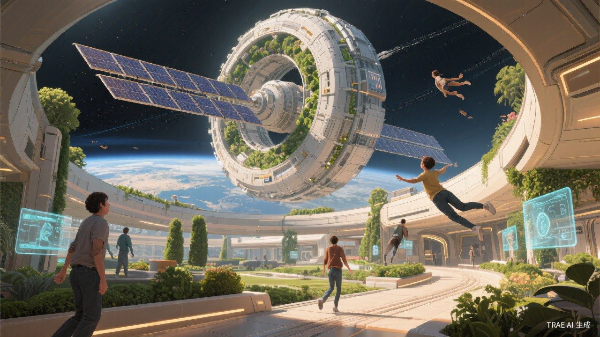
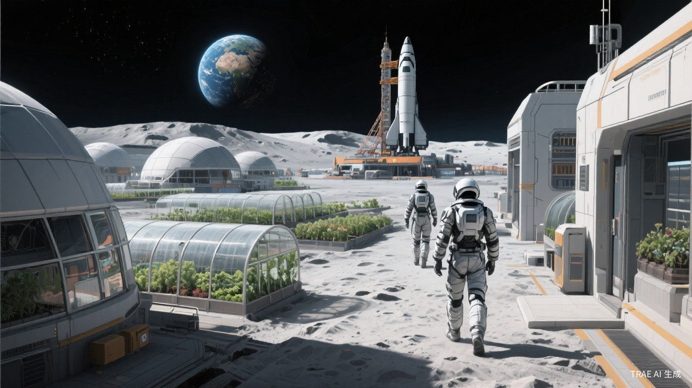
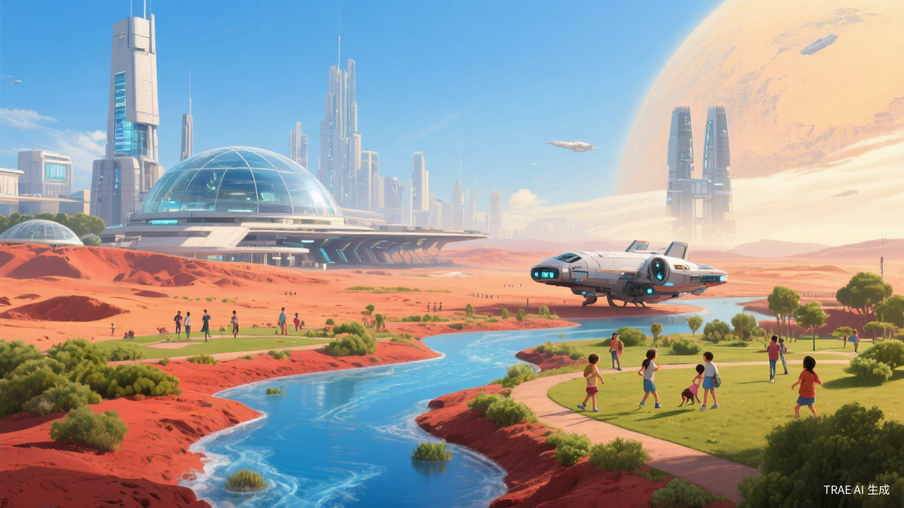

宇宙尺度之旅
从银河系的旋臂出发，穿越星际尘埃，掠过太阳系，
降落在你此刻所在的位置——
一场跨越 10²¹ 米的旅程
开始旅程
当前尺度
银河系
~100,000 光年
×
太空哲学
"我们都是星尘。"
—— 卡尔·萨根
宇宙知识
可观测宇宙的直径约为930亿光年。
+
−
▶
⟲
物
乐
∞ 宇宙
银河系
太阳系
地球
你
×

轨道太空殖民地
2076 · 近地轨道

月球永久基地
2076 · 月球表面

火星殖民城市
2076 · 火星表面